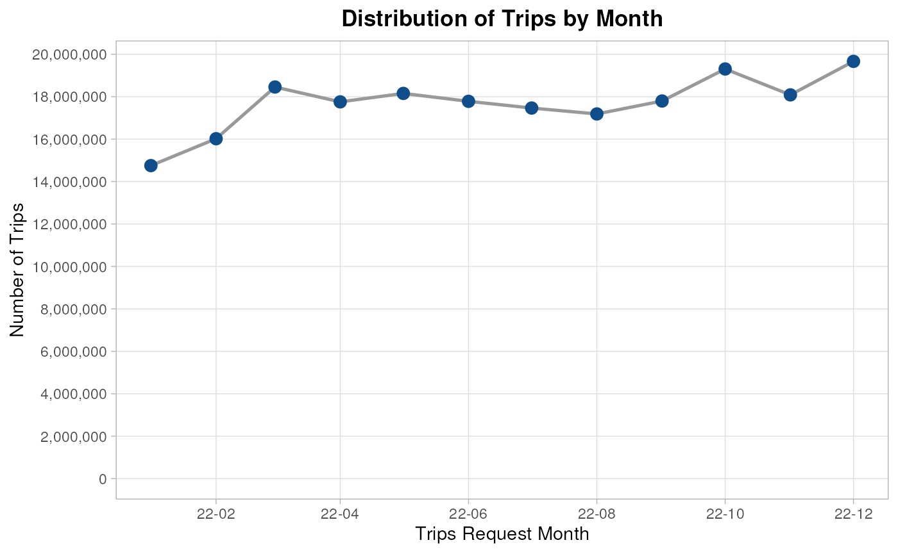
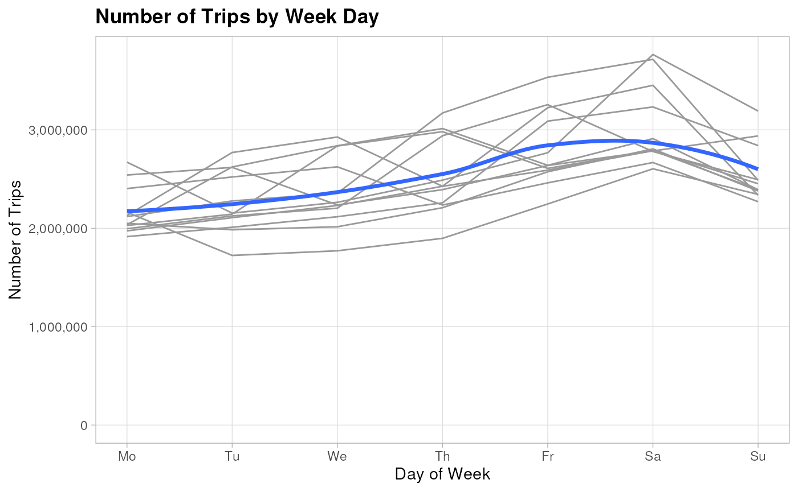

After completing the business understanding phase we are ready to perform the data understanding phase by performing an EDA with the following steps:
- Exploring the individual distribution of variables.
- Taking a subset of the data to fit in RAM.
- Exploring correlations between predictors and target variable.
- Exploring correlations between predictors.
In order to:
- Ensure data quality
- Identify key predictors
- Detect multicollinearity
- Guide model choice and feature engineering
Setting the environment up
To setting the R environment up we just need to apply
the following 5 steps:
- Loading the packages to use.
library(here)
library(data.table)
library(ggplot2)
library(scales)
library(forcats)
library(lubridate)
library(dplyr)
library(arrow)
library(recipes)
options(datatable.print.nrows = 15,
digits = 4)- Creating an Arrow connection object to perform some manipulations in disk before taking the data into the RAM memory.
data_path <- here("raw-data/trip-data/year=2022")
NycTrips2022 <- open_dataset(data_path)
dim(NycTrips2022) |> comma()
#> [1] "212,416,083" "25"
NycTrips2022
#> FileSystemDataset with 12 Parquet files
#> hvfhs_license_num: string
#> dispatching_base_num: string
#> originating_base_num: string
#> request_datetime: timestamp[us]
#> on_scene_datetime: timestamp[us]
#> pickup_datetime: timestamp[us]
#> dropoff_datetime: timestamp[us]
#> PULocationID: int64
#> DOLocationID: int64
#> trip_miles: double
#> trip_time: int64
#> base_passenger_fare: double
#> tolls: double
#> bcf: double
#> sales_tax: double
#> congestion_surcharge: double
#> airport_fee: double
#> tips: double
#> driver_pay: double
#> shared_request_flag: string
#> shared_match_flag: string
#> access_a_ride_flag: string
#> wav_request_flag: string
#> wav_match_flag: string
#> month: int32
#>
#> See $metadata for additional Schema metadata- Importing the zone code description with
latandlong.
ZoneCodesArcgis <-
fread(here("raw-data/taxi_zone_lookup.csv"),
colClasses = c("integer",
"character",
"character",
"character")
)[, Address := paste(Zone,
Borough,
"New York",
"United States",
sep = ", ")
][, tidygeocoder::geocode(.SD,
address = Address,
method = 'arcgis')]
setDT(ZoneCodesArcgis)
glimpse(ZoneCodesArcgis)#> Rows: 265
#> Columns: 7
#> $ LocationID <int> 1, 2, 3, 4, 5, 6, 7, 8, 9, 10, 11, 12, 13, 14, 15, 16, 17…
#> $ Borough <chr> "EWR", "Queens", "Bronx", "Manhattan", "Staten Island", "…
#> $ Zone <chr> "Newark Airport", "Jamaica Bay", "Allerton/Pelham Gardens…
#> $ service_zone <chr> "EWR", "Boro Zone", "Boro Zone", "Yellow Zone", "Boro Zon…
#> $ Address <chr> "Newark Airport, EWR, New York, United States", "Jamaica …
#> $ lat <dbl> 43.06, 40.62, 40.87, 40.73, 40.55, 40.60, 40.77, 40.78, 4…
#> $ long <dbl> -77.10, -73.82, -73.84, -73.98, -74.17, -74.06, -73.93, -…- Validating the added latitude and longitude, by plotting all the points in an interactive map from we can highlight the following issues:
- The location suggested for the Newark Airport is not correct.
- More than one zone is represented by one location.
BoroughColors <- c(
'Manhattan' = '#e41a1c',
'Queens' = '#377eb8',
'Brooklyn'= '#4daf4a',
'Bronx' = '#984ea3',
'Staten Island' = '#ff7f00',
'EWR' = '#a65628'
)
plot_map(
ZoneCodesArcgis,
lng_var = "long",
lat_var = "lat",
color_var = "Borough",
color_palette = BoroughColors,
radius = 3,
label_var = "Zone"
)Now we can see the new map after solving the prior problems.
ZoneCodesArcgisClean <- clean_zone_manually(ZoneCodesArcgis)
plot_map(
ZoneCodesArcgisClean,
lng_var = "long",
lat_var = "lat",
color_var = "Borough",
color_palette = BoroughColors,
radius = 3,
label_var = "Zone"
)- Counting the number of trips for each code, collecting and translating the zone codes.
TripsZoneDistribution <-
NycTrips2022 |>
count_pct(PULocationID, DOLocationID) |>
add_zone_description(zone_dt = ZoneCodesArcgisClean,
start_id_col = "PULocationID",
end_id_col = "DOLocationID",
zone_id_col = "LocationID")
glimpse(TripsZoneDistribution)
#> Rows: 65,445
#> Columns: 15
#> $ start_borough <chr> "Queens", "Brooklyn", "Queens", "Brooklyn", "Brookl…
#> $ start_zone <chr> "JFK Airport", "East New York", "LaGuardia Airport"…
#> $ start_service_zone <chr> "Airports", "Boro Zone", "Airports", "Boro Zone", "…
#> $ start_address <chr> "JFK Airport, Queens, New York, United States", "Ea…
#> $ start_lat <dbl> 40.64, 40.67, 40.78, 40.63, 40.64, 40.67, 40.63, 40…
#> $ start_long <dbl> -73.79, -73.88, -73.87, -74.00, -73.90, -73.95, -74…
#> $ end_borough <chr> "Unknown", "Brooklyn", "Unknown", "Brooklyn", "Broo…
#> $ end_zone <chr> "NA", "East New York", "NA", "Borough Park", "Canar…
#> $ end_service_zone <chr> "N/A", "Boro Zone", "N/A", "Boro Zone", "Boro Zone"…
#> $ end_address <chr> "NA, Unknown, New York, United States", "East New Y…
#> $ end_lat <dbl> 40.71, 40.67, 40.71, 40.63, 40.64, 40.67, 40.63, 40…
#> $ end_long <dbl> -74.01, -73.88, -74.01, -74.00, -73.90, -73.95, -74…
#> $ n <int> 690618, 640891, 453413, 383687, 368971, 324967, 272…
#> $ pct <dbl> 0.003, 0.003, 0.002, 0.002, 0.002, 0.002, 0.001, 0.…
#> $ pct_cumulative <dbl> 0.003, 0.006, 0.008, 0.010, 0.012, 0.014, 0.015, 0.…Individual distributions
Categorical variables
Let’s starting counting and checking the proportions related to each category.
company
The majority number of trips are done by Uber (HV003) and the rest for Lyft.
NycTrips2022 |>
count_pct(company = case_when(hvfhs_license_num == "HV0002" ~ "Juno",
hvfhs_license_num == "HV0003" ~ "Uber",
hvfhs_license_num == "HV0004" ~ "Via",
hvfhs_license_num == "HV0005" ~ "Lyft"))
#> company n pct pct_cumulative
#> <char> <int> <num> <num>
#> 1: Uber 153847310 0.724 0.724
#> 2: Lyft 58568773 0.276 1.000To improve interpretavility we need to make the same translation after sampling the data.
dispatching_base_num
For most of the trips the dispatching number are B03404 and B03406. The remaining codes represent a small proportion of observations.
NycTrips2022 |>
count_pct(dispatching_base_num)
#> dispatching_base_num n pct pct_cumulative
#> <char> <int> <num> <num>
#> 1: B03404 153732577 0.724 0.724
#> 2: B03406 58568773 0.276 1.000
#> 3: B02764 54512 0.000 1.000
#> 4: B02872 6078 0.000 1.000
#> 5: B02395 4789 0.000 1.000
#> ---
#> 25: B02878 591 0.000 1.000
#> 26: B02879 458 0.000 1.000
#> 27: B02875 213 0.000 1.000
#> 28: B02883 137 0.000 1.000
#> 29: B02865 3 0.000 1.000originating_base_num
For most of the trips the originating number is B03404 and the second is missing. The remaining codes represent a small proportion of observations.
NycTrips2022 |>
count_pct(originating_base_num)
#> originating_base_num n pct pct_cumulative
#> <char> <int> <num> <num>
#> 1: B03404 153730161 0.724 0.724
#> 2: <NA> 58498724 0.275 0.999
#> 3: B03406 71481 0.000 0.999
#> 4: B02764 54511 0.000 0.999
#> 5: B02872 6078 0.000 0.999
#> ---
#> 33: B02003 10 0.000 0.999
#> 34: B00446 6 0.000 0.999
#> 35: B01985 5 0.000 0.999
#> 36: B02865 3 0.000 0.999
#> 37: B02826 1 0.000 0.999access_a_ride_flag
Must of the trips doesn’t provide any information related to whether they were administered on behalf of the Metropolitan Transportation Authority (MTA) and the remaining confirm that there aren’t.
NycTrips2022 |>
count_pct(access_a_ride_flag)
#> access_a_ride_flag n pct pct_cumulative
#> <char> <int> <num> <num>
#> 1: 153847310 0.724 0.724
#> 2: N 58568773 0.276 1.000shared_request_flag
Most of passengers don’t request to a shared/pooled ride.
NycTrips2022 |>
count_pct(shared_request_flag)
#> shared_request_flag n pct pct_cumulative
#> <char> <int> <num> <num>
#> 1: N 210564721 0.991 0.991
#> 2: Y 1851362 0.009 1.000shared_match_flag
Most of passengers don’t request to a shared/pooled ride, but even fewer achieved to share the ride.
NycTrips2022 |>
count_pct(shared_match_flag)
#> shared_match_flag n pct pct_cumulative
#> <char> <int> <num> <num>
#> 1: N 211916075 0.998 0.998
#> 2: Y 500008 0.002 1.000wav_request_flag
It’s really unusual to request a wheelchair-accessible vehicle.
NycTrips2022 |>
count_pct(wav_request_flag)
#> wav_request_flag n pct pct_cumulative
#> <char> <int> <num> <num>
#> 1: N 212142808 0.999 0.999
#> 2: Y 273275 0.001 1.000wav_match_flag
It’s really unusual to request a wheelchair-accessible vehicle, but we have more tips take place in wheelchair-accessible vehicles, so it seems that the service has the capacity to meet the demand.
NycTrips2022 |>
count_pct(wav_match_flag)
#> wav_match_flag n pct pct_cumulative
#> <char> <int> <num> <num>
#> 1: N 199779404 0.941 0.941
#> 2: Y 12636679 0.059 1.000start_service_zone
96% of trips start in Boro Zone and Yellow Zone.
TripsZoneDistribution |>
count_pct(start_service_zone, wt = n)
#> start_service_zone n pct pct_cumulative
#> <char> <int> <num> <num>
#> 1: Boro Zone 129107636 0.608 0.608
#> 2: Yellow Zone 75817668 0.357 0.965
#> 3: Airports 7480129 0.035 1.000
#> 4: N/A 10625 0.000 1.000
#> 5: EWR 25 0.000 1.000end_service_zone
91% of trips start in Boro Zone and Yellow Zone.
TripsZoneDistribution |>
count_pct(end_service_zone, wt = n)
#> end_service_zone n pct pct_cumulative
#> <char> <int> <num> <num>
#> 1: Boro Zone 124765613 0.587 0.587
#> 2: Yellow Zone 69100865 0.325 0.912
#> 3: N/A 8659223 0.041 0.953
#> 4: Airports 8523273 0.040 0.993
#> 5: EWR 1367109 0.006 0.999start_borough
87% of trips start in Manhattan, Brooklyn or Queens.
TripsZoneDistribution |>
count_pct(start_borough, wt = n)
#> start_borough n pct pct_cumulative
#> <char> <int> <num> <num>
#> 1: Manhattan 88031630 0.414 0.414
#> 2: Brooklyn 54874948 0.258 0.672
#> 3: Queens 41897696 0.197 0.869
#> 4: Bronx 24797734 0.117 0.986
#> 5: Staten Island 2803425 0.013 0.999
#> 6: Unknown 10625 0.000 0.999
#> 7: EWR 25 0.000 0.999start_zone
To gain a deeper understanding of the starting trips at the zone level, we’ll create a wrapper function to display the top 5 most significant zones and generate an interactive map.
The map will illustrate the location of each zone in relation to the remaining locations within each borough.
Here we can see how the East Village zone is surrounded by (Meatpacking) West Village and Clinton (East|West), so most of the activity happens in those places. The remaining top zones ( Upper East Side (North|South) and Central Harlem (North) ) are surrounding the Central Park.
All these places are very popular for local and international tourist.
highlight_top_zones(TripsZoneDistribution,
borough = "Manhattan",
borough_color = BoroughColors[["Manhattan"]],
top_color = "purple",
col_prefix = "start_")
#> start_zone start_long start_lat million_trips
#> <char> <num> <num> <num>
#> 1: (Meatpacking) West Village -74.00 40.73 3.722
#> 2: Clinton (East|West) -73.99 40.71 3.700
#> 3: Upper East Side (North|South) -73.96 40.77 3.455
#> 4: Central Harlem (North) -73.96 40.80 3.281
#> 5: East Village -73.98 40.73 3.204In this Borough, the most important starting zones are concentrated in the north part. Bushwick (North|South), Crown Heights (North|South), Williamsburg (North Side) and Park Slope form an “U” shape, the farthest zone is the East New York.
highlight_top_zones(TripsZoneDistribution,
borough = "Brooklyn",
borough_color = BoroughColors[["Brooklyn"]],
top_color = "purple",
col_prefix = "start_")
#> start_zone start_long start_lat million_trips
#> <char> <num> <num> <num>
#> 1: Bushwick (North|South) -73.92 40.69 4.024
#> 2: Crown Heights (North|South) -73.95 40.67 3.549
#> 3: East New York -73.88 40.67 2.201
#> 4: Williamsburg (North Side) -73.95 40.71 2.178
#> 5: Park Slope -73.99 40.67 1.985Most of the most important starting zones are concentrated in north part of this Borough and the only exception is the JFK Airport in the south.
highlight_top_zones(TripsZoneDistribution,
borough = "Queens",
borough_color = BoroughColors[["Queens"]],
top_color = "purple",
col_prefix = "start_")
#> start_zone start_long start_lat million_trips
#> <char> <num> <num> <num>
#> 1: LaGuardia Airport -73.87 40.78 3.826
#> 2: JFK Airport -73.79 40.64 3.654
#> 3: (Old) Astoria -73.93 40.77 2.821
#> 4: Elmhurst (Maspeth) -73.88 40.74 1.826
#> 5: Long Island City/Hunters Point -73.96 40.75 1.675end_borough
82% of trips end in Manhattan, Brooklyn or Queens.
TripsZoneDistribution |>
count_pct(end_borough, wt = n)
#> Index: <start_borough>
#> end_borough n pct pct_cumulative
#> <char> <int> <num> <num>
#> 1: Manhattan 80967388 0.381 0.381
#> 2: Brooklyn 54143716 0.255 0.636
#> 3: Queens 40982171 0.193 0.829
#> 4: Bronx 23541369 0.111 0.940
#> 5: Unknown 8659223 0.041 0.981
#> 6: Staten Island 2755107 0.013 0.994
#> 7: EWR 1367109 0.006 1.000end_zone
If we focus our attention to the places where the trips end we see the new zone East Harlem (North|South) which get the top 5 moving the East Village to the sixth position.
highlight_top_zones(TripsZoneDistribution,
borough = "Manhattan",
borough_color = BoroughColors[["Manhattan"]],
top_length = 6,
top_color = "purple",
col_prefix = "end_")
#> end_zone end_long end_lat million_trips
#> <char> <num> <num> <num>
#> 1: Upper East Side (North|South) -73.96 40.77 3.418
#> 2: (Meatpacking) West Village -74.00 40.73 3.178
#> 3: Clinton (East|West) -73.99 40.71 3.144
#> 4: Central Harlem (North) -73.96 40.80 3.045
#> 5: East Harlem (North|South) -73.93 40.82 2.728
#> 6: East Village -73.98 40.73 2.681We also can see the same pattern from the ending zone perspective.
highlight_top_zones(TripsZoneDistribution,
borough = "Brooklyn",
borough_color = BoroughColors[["Brooklyn"]],
top_color = "purple",
col_prefix = "end_")
#> end_zone end_long end_lat million_trips
#> <char> <num> <num> <num>
#> 1: Bushwick (North|South) -73.92 40.69 4.028
#> 2: Crown Heights (North|South) -73.95 40.67 3.660
#> 3: East New York -73.88 40.67 2.187
#> 4: Williamsburg (North Side) -73.95 40.71 2.026
#> 5: Park Slope -73.99 40.67 1.947For the ending perspective, now the JFK Airport present more trips than the LaGuardia Airport.
highlight_top_zones(TripsZoneDistribution,
borough = "Queens",
borough_color = BoroughColors[["Queens"]],
top_color = "purple",
col_prefix = "end_")
#> end_zone end_long end_lat million_trips
#> <char> <num> <num> <num>
#> 1: JFK Airport -73.79 40.64 4.328
#> 2: LaGuardia Airport -73.87 40.78 4.196
#> 3: (Old) Astoria -73.93 40.77 2.709
#> 4: Elmhurst (Maspeth) -73.88 40.74 1.771
#> 5: Long Island City/Hunters Point -73.96 40.75 1.660Time variables
As we want to predict the profit rate related to
each trip, we just need to consider for this analysis
request_datetime as is the only variable available to the
driver before starting a trip and the dropoff_datetime the
point used to defining the end of a trip.
We know that a taxi trip takes more less than a day doesn’t make more
sense to explore each variable related to time. Instead, it is better to
consecrate the efforts to understand the distribution of the exploratory
variable later to explore the difference between
request_datetime and dropoff_datetime as a
numeric variable.
To describe this variable, we decomposed it in different parts and
count the number trips by each element and store the summary as a
data.table to explore each part using visualizations.
RequestTimeSummary <-
NycTrips2022 |>
mutate(request_date = as_date(request_datetime)) |>
count(request_month = floor_date(request_date, unit = "month"),
request_week = floor_date(request_date, unit = "week"),
request_day = day(request_date),
request_weekday = wday(request_date, week_start = 1),
request_hour = hour(request_datetime)) |>
collect() |>
as.data.table()request_datetime by month
In the next chart, we can see that the number trips keeps almost constant must of the year, but we have some fewer trips during the first 2 months and some extra trips in October and December.
RequestTimeSummary[year(request_month) == 2022,
.(n = sum(n)),
by = "request_month"] |>
ggplot(aes(request_month, n))+
geom_line(color = "grey60",
linewidth = 0.9)+
geom_point(color = "dodgerblue4",
size = 3)+
scale_x_date(date_labels = "%y-%m",
date_breaks = "2 months")+
scale_y_continuous(labels = comma_format(),
breaks = breaks_width(2e6))+
labs(title = "Distribution of Trips by Month",
x = "Trips Request Month",
y = "Number of Trips")+
expand_limits(y = 0)+
theme_light()+
theme(plot.title = element_text(face = "bold", hjust = 0.5),
panel.grid.minor = element_blank(),
legend.position = "top")
request_datetime by week
By breaking the months into weeks we can confirm we have fewer trips in the first 2 months, in relation to October we don’t see a big change in he number of trips we see is that it has more weeks than November, but December keeps having more trips than normal in the first 2 weeks.
RequestTimeSummary[year(request_month) == 2022,
.(n = sum(n)),
by = "request_week"] |>
ggplot(aes(request_week, n))+
geom_line(color = "grey60",
linewidth = 0.9)+
geom_point(color = "dodgerblue4",
size = 3)+
scale_x_date(date_labels = "%y-%m",
date_breaks = "month")+
scale_y_continuous(labels = comma_format(),
breaks = breaks_width(5e5))+
labs(title = "Distribution of Trips by Week",
x = "Trips Request Week",
y = "Number of Trips")+
expand_limits(y = 0)+
theme_light()+
theme(plot.title = element_text(face = "bold", hjust = 0.5),
panel.grid.minor = element_blank(),
legend.position = "top")request_datetime by month day
If we explore the number of trips by month day we can not see any consistent pattern after plotting a line with total of trips for each month.
RequestTimeSummary[year(request_month) == 2022,
.(n = sum(n)),
by = .(request_month = format(request_month, "%B"),
request_day)] |>
ggplot(aes(request_day, n))+
geom_line(aes(group = request_month),
color = "gray60",
linewidth = 0.1)+
geom_smooth(method = 'loess',
formula = 'y ~ x',
se = FALSE,
linewidth = 1.2)+
scale_x_continuous(breaks = breaks_width(5))+
scale_y_continuous(labels = comma_format())+
expand_limits(y = 0)+
labs(title = "Number of Trips by Month Day",
y = "Number of Trips",
x = "Day of Month")+
theme_light()+
theme(panel.grid = element_blank(),
plot.title = element_text(face = "bold"))request_datetime by week day
By if we change the month day in the prior chart with week day we can find that the number of trips trends to be higher Fridays and Saturdays.
RequestTimeSummary[year(request_month) == 2022,
.(n = sum(n)),
by = .(request_month = format(request_month, "%B"),
request_weekday)] |>
ggplot(aes(request_weekday, n))+
geom_line(aes(group = request_month),
color = "gray60")+
geom_smooth(method = 'loess',
formula = 'y ~ x',
se = FALSE,
linewidth = 1.2)+
scale_x_continuous(breaks = breaks_width(1),
labels = factor_weekday)+
scale_y_continuous(labels = comma_format())+
expand_limits(y = 0)+
labs(title = "Number of Trips by Week Day",
y = "Number of Trips",
x = "Day of Week")+
theme_light()+
theme(panel.grid.minor = element_blank(),
plot.title = element_text(face = "bold"))
request_datetime by week day and hour
To understand better what is happening Fridays and Saturdays let’s break each week day by hour. In the next chart, we can see how the higher number of trips start at 17:00 and end at 1:00 of next day for Fridays and Saturdays.
RequestTimeSummary[year(request_month) == 2022,
.(n = sum(n)),
by = .(request_hour =
factor(request_hour) |> fct_rev(),
request_weekday = factor_weekday(request_weekday))
][, n_million := n/1e6 ] |>
ggplot(aes(request_weekday, request_hour))+
geom_tile(aes(fill = n),
color = "black",
linewidth = 0.005)+
geom_text(aes(label = comma(n_million, accuracy = 0.1, suffix = " M")))+
scale_fill_gradient(low = "white",
high = "dodgerblue4",
labels= comma_format())+
scale_x_discrete(position = "top") +
labs(title = "Number of Trips by Hour and Week Day",
fill = "Number of Trips",
x = "Request Week Day",
y = "Request Hour") +
theme_classic() +
theme(plot.title = element_text(face = "bold"),
axis.ticks = element_blank(),
axis.line = element_blank(),
axis.text = element_text(color = "black"))Numeric variables
Last but not least, it time check explore the individual distribution
of numeric variable based of summary metrics by using the custom
compute_num_summary to use all the power under the
arrow package.
trip_miles
Below we can see that the min distance was 0 miles which can be possible if the trip duration was also short, but we need to check those cases and the higher distance was 634 miles, which can be a valid outlier taking in consideration that the higher whisker is 13.2 miles.
NycTrips2022 |>
compute_num_summary(trip_miles)
#> Warning: quantile() currently returns an approximate quantile in Arrow
#> This warning is displayed once per session.
#> Warning: median() currently returns an approximate median in Arrow
#> This warning is displayed once per session.
#> # A tibble: 1 × 9
#> sd min_value lower_whisker q1 q2 mean q3 higher_whisker max_value
#> <dbl> <dbl> <dbl> <dbl> <dbl> <dbl> <dbl> <dbl> <dbl>
#> 1 5.87 0 -5.34 1.62 3.03 5.03 6.26 13.2 634.We can also check that only 24.4K trips are over 100 miles.
NycTrips2022 |>
count_pct(trip_miles_status = case_when(trip_miles < 100 ~ "Normal trips",
trip_miles >= 100 ~ "Long Trips"),
digits = 4L)
#> trip_miles_status n pct pct_cumulative
#> <char> <int> <num> <num>
#> 1: Normal trips 212391618 0.9999 0.9999
#> 2: Long Trips 24465 0.0001 1.0000But even just taking the long trips we can see that 98% of those trips were shorter than 300 miles, those trips doesn’t look like good examples to train the model.
NycTrips2022 |>
filter(trip_miles >= 100) |>
count_pct(miles_interval = case_when(trip_miles >= 600 ~ ">=600",
trip_miles >= 500 ~ "[500, 600)",
trip_miles >= 400 ~ "[400, 500)",
trip_miles >= 300 ~ "[300, 400)",
trip_miles >= 200 ~ "[200, 300)",
trip_miles >= 150 ~ "[150, 200)",
trip_miles >= 130 ~ "[130, 150)",
trip_miles >= 115 ~ "[115, 130)",
trip_miles >= 100 ~ "[100,115)"),
digits = 4L)
#> miles_interval n pct pct_cumulative
#> <char> <int> <num> <num>
#> 1: [100,115) 11735 0.4797 0.4797
#> 2: [115, 130) 5292 0.2163 0.6960
#> 3: [130, 150) 2802 0.1145 0.8105
#> 4: [150, 200) 2370 0.0969 0.9074
#> 5: [200, 300) 1675 0.0685 0.9759
#> 6: [300, 400) 248 0.0101 0.9860
#> 7: [400, 500) 233 0.0095 0.9955
#> 8: [500, 600) 95 0.0039 0.9994
#> 9: >=600 15 0.0006 1.0000base_passenger_fare
Just by checking the summary statistics we can see to important problems:
- A base fare can not be negative
- A base of almost $5k is too much
NycTrips2022 |>
compute_num_summary(base_passenger_fare)
#> # A tibble: 1 × 9
#> sd min_value lower_whisker q1 q2 mean q3 higher_whisker max_value
#> <dbl> <dbl> <dbl> <dbl> <dbl> <dbl> <dbl> <dbl> <dbl>
#> 1 19.7 -520. -15.1 11.4 18.2 23.7 29.1 55.6 4996.By checking the closer to the distribution we can confirm that 99% of trips present a base fare from 5 to 50 dollars, but any fare higher that 750 dollars seems weird won’t be used to train the model.
NycTrips2022 |>
count_pct(base_passenger_fare_interval =
case_when(base_passenger_fare >= 4000 ~ ">=4000",
base_passenger_fare >= 3000 ~ "[3000, 4000)",
base_passenger_fare >= 2000 ~ "[2000, 3000)",
base_passenger_fare >= 1000 ~ "[1000, 2000)",
base_passenger_fare >= 750 ~ "[750, 1000)",
base_passenger_fare >= 500 ~ "[500, 750)",
base_passenger_fare >= 400 ~ "[400, 500)",
base_passenger_fare >= 300 ~ "[300, 400)",
base_passenger_fare >= 200 ~ "[200, 300)",
base_passenger_fare >= 100 ~ "[100, 200)",
base_passenger_fare >= 50 ~ "[50, 10)",
base_passenger_fare >= 5 ~ "[5, 50)",
base_passenger_fare >= 0 ~ "[0, 5)",
TRUE ~ "<0"),
digits = 8L)
#> base_passenger_fare_interval n pct pct_cumulative
#> <char> <int> <num> <num>
#> 1: [5, 50) 196074667 9.231e-01 0.9231
#> 2: [50, 10) 13910864 6.549e-02 0.9886
#> 3: [100, 200) 1866578 8.787e-03 0.9973
#> 4: <0 233608 1.100e-03 0.9984
#> 5: [0, 5) 175426 8.259e-04 0.9993
#> 6: [200, 300) 123817 5.829e-04 0.9999
#> 7: [300, 400) 21832 1.028e-04 1.0000
#> 8: [400, 500) 5225 2.460e-05 1.0000
#> 9: [500, 750) 3290 1.549e-05 1.0000
#> 10: [750, 1000) 482 2.270e-06 1.0000
#> 11: [1000, 2000) 241 1.130e-06 1.0000
#> 12: [2000, 3000) 49 2.300e-07 1.0000
#> 13: [3000, 4000) 3 1.000e-08 1.0000
#> 14: >=4000 1 0.000e+00 1.0000driver_pay
Just by checking the summary statistics we can confirm that also
driver_pay is sharing the same problems that
base_passenger_fare.
NycTrips2022 |>
compute_num_summary(driver_pay)
#> # A tibble: 1 × 9
#> sd min_value lower_whisker q1 q2 mean q3 higher_whisker max_value
#> <dbl> <dbl> <dbl> <dbl> <dbl> <dbl> <dbl> <dbl> <dbl>
#> 1 15.4 -407. -12.9 8.86 14.3 18.7 23.3 45.1 4643.And after checking the distribution we can confirm that paying more than 750 must be a mistake that we don’t want to use for training the model.
NycTrips2022 |>
count_pct(driver_pay_interval =
case_when(driver_pay >= 4000 ~ ">=4000",
driver_pay >= 3000 ~ "[3000, 4000)",
driver_pay >= 2000 ~ "[2000, 3000)",
driver_pay >= 1000 ~ "[1000, 2000)",
driver_pay >= 750 ~ "[750, 1000)",
driver_pay >= 500 ~ "[500, 750)",
driver_pay >= 400 ~ "[400, 500)",
driver_pay >= 300 ~ "[300, 400)",
driver_pay >= 200 ~ "[200, 300)",
driver_pay >= 100 ~ "[100, 200)",
driver_pay >= 50 ~ "[50, 10)",
driver_pay >= 5 ~ "[5, 50)",
driver_pay >= 0 ~ "[0, 5)",
TRUE ~ "<0"),
digits = 8L)
#> driver_pay_interval n pct pct_cumulative
#> <char> <int> <num> <num>
#> 1: [5, 50) 202732167 9.544e-01 0.9544
#> 2: [50, 10) 7570284 3.564e-02 0.9900
#> 3: [0, 5) 1371619 6.457e-03 0.9965
#> 4: [100, 200) 688052 3.239e-03 0.9997
#> 5: [200, 300) 40563 1.910e-04 0.9999
#> 6: [300, 400) 6864 3.231e-05 1.0000
#> 7: <0 2678 1.261e-05 1.0000
#> 8: [400, 500) 2164 1.019e-05 1.0000
#> 9: [500, 750) 1201 5.650e-06 1.0000
#> 10: [750, 1000) 327 1.540e-06 1.0000
#> 11: [1000, 2000) 160 7.500e-07 1.0000
#> 12: [2000, 3000) 3 1.000e-08 1.0000
#> 13: >=4000 1 0.000e+00 1.0000tips
The column looks really good, it makes sense that for more than 75% of trips the tip is 0 as it is not mandatory, but having a trip with a $294 tip is not hard to believe.
NycTrips2022 |>
compute_num_summary(tips)
#> # A tibble: 1 × 9
#> sd min_value lower_whisker q1 q2 mean q3 higher_whisker
#> <dbl> <dbl> <dbl> <dbl> <dbl> <dbl> <dbl> <dbl>
#> 1 3.04 0 -0.00000892 0 0 1.08 0.00000595 0.0000149
#> # ℹ 1 more variable: max_value <dbl>After braking the tips we can see that 80%
of trips don’t present any tip and must of the tips are lower than
50 dollars, so gets really hard to achieved more than
that based on tips.
NycTrips2022 |>
count_pct(tips_interval = case_when(tips >= 250 ~ ">=250",
tips >= 200 ~ "[200, 250)",
tips >= 150 ~ "[150, 200)",
tips >= 100 ~ "[100, 150)",
tips >= 50 ~ "[50, 100)",
tips > 0 ~ "(0, 50)",
TRUE ~ "0"),
digits = 8L)
#> tips_interval n pct pct_cumulative
#> <char> <int> <num> <num>
#> 1: 0 170057940 8.006e-01 0.8006
#> 2: (0, 50) 42325635 1.993e-01 0.9998
#> 3: [50, 100) 31872 1.500e-04 1.0000
#> 4: [100, 150) 572 2.690e-06 1.0000
#> 5: [150, 200) 56 2.600e-07 1.0000
#> 6: [200, 250) 7 3.000e-08 1.0000
#> 7: >=250 1 0.000e+00 1.0000trip_minutes
After taking the difference in minutes between the request time and the drop off time in minutes, we can see negative trips and some other much longer than an hour.
NycTrips2022 |>
mutate(trip_minutes = arrow_minutes_between(request_datetime, dropoff_datetime)) |>
compute_num_summary(trip_minutes)
#> # A tibble: 1 × 9
#> sd min_value lower_whisker q1 q2 mean q3 higher_whisker max_value
#> <dbl> <int> <dbl> <dbl> <dbl> <dbl> <dbl> <dbl> <int>
#> 1 14.7 -314 -8.99 14.7 20.9 24.6 30.5 54.3 2469Now we can see that 99% of trips takes less than 2 hours and only 152,049 trips have more than 2 hour trip.
NycTrips2022 |>
mutate(trip_minutes = arrow_minutes_between(request_datetime, dropoff_datetime)) |>
count_pct(trip_minutes_status = case_when(trip_minutes < 0 ~ "Negative",
trip_minutes <= 60 ~ "1 hour or less",
trip_minutes <= (60*2) ~ "(1:00, 2:00]",
trip_minutes <= (60*3) ~ "(2:00, 3:00]",
trip_minutes > (60*3) ~ ">3 hours"),
digits = 6L)
#> trip_minutes_status n pct pct_cumulative
#> <char> <int> <num> <num>
#> 1: 1 hour or less 206298571 0.971200 0.9712
#> 2: (1:00, 2:00] 5740869 0.027027 0.9982
#> 3: Negative 224594 0.001057 0.9993
#> 4: (2:00, 3:00] 132341 0.000623 0.9999
#> 5: >3 hours 19708 0.000093 1.0000Sampling data
Due our limited compute power capacity we will need to sample the data to be able to unlock all R capacities.
As most of the trips take place between Manhattan, Brooklyn and Queens, we are going to focus first in those zones.
Solving quality problems
TrainingTripsCleaned <-
TrainingTrips |>
add_zone_description(zone_dt = ZoneCodesArcgisClean,
start_id_col = "PULocationID",
end_id_col = "DOLocationID",
zone_id_col = "LocationID") |>
apply_base_cleaning()
glimpse(TrainingTripsCleaned)
#> Rows: 1,702,465
#> Columns: 23
#> $ company <fct> Lyft, Uber, Uber, Uber, Uber, Uber, Uber, Uber, U…
#> $ dispatching_base_num <fct> B03406, B03404, B03404, B03404, B03404, B03404, B…
#> $ originating_base_num <fct> Other, B03404, B03404, B03404, B03404, B03404, B0…
#> $ shared_request_flag <fct> N, N, N, N, N, N, N, N, N, N, N, N, N, N, N, N, N…
#> $ shared_match_flag <fct> N, N, N, N, N, N, N, N, N, N, N, N, N, N, N, N, N…
#> $ access_a_ride_flag <fct> N, Missing, Missing, Missing, Missing, Missing, M…
#> $ wav_request_flag <fct> N, N, N, N, N, N, N, N, N, N, N, N, N, N, N, N, N…
#> $ wav_match_flag <fct> N, N, N, N, N, N, N, N, N, N, N, N, N, N, N, N, N…
#> $ start_borough <fct> Queens, Manhattan, Brooklyn, Brooklyn, Queens, Ma…
#> $ end_borough <fct> Manhattan, Manhattan, Brooklyn, Brooklyn, Brookly…
#> $ start_service_zone <fct> Boro Zone, Yellow Zone, Boro Zone, Boro Zone, Air…
#> $ end_service_zone <fct> Yellow Zone, Yellow Zone, Boro Zone, Boro Zone, B…
#> $ same_borough <lgl> FALSE, TRUE, TRUE, TRUE, FALSE, TRUE, TRUE, TRUE,…
#> $ same_service_zone <lgl> FALSE, TRUE, TRUE, TRUE, FALSE, TRUE, TRUE, TRUE,…
#> $ same_zone <lgl> FALSE, TRUE, FALSE, FALSE, FALSE, FALSE, FALSE, F…
#> $ base_passenger_fare <dbl> 36.95, 14.15, 29.70, 9.53, 21.30, 10.98, 9.67, 10…
#> $ trip_miles <dbl> 23.749, 0.640, 9.250, 1.570, 6.720, 1.700, 1.510,…
#> $ request_datetime <dttm> 2022-01-02 14:34:02, 2022-01-18 21:05:37, 2022-0…
#> $ dropoff_datetime <dttm> 2022-01-02 15:23:01, 2022-01-18 21:15:34, 2022-0…
#> $ trip_minutes <int> 48, 9, 38, 12, 27, 14, 16, 11, 23, 14, 7, 15, 18,…
#> $ tips <dbl> 0, 0, 0, 0, 0, 0, 0, 7, 0, 1, 0, 0, 0, 0, 0, 0, 0…
#> $ driver_pay <dbl> 58.64, 11.11, 28.22, 7.71, 17.44, 7.64, 6.70, 8.4…
#> $ profit_rate <dbl> 73.30, 74.07, 44.56, 38.55, 38.76, 32.74, 25.12, …
TrainingTripsCleaned[, .N,
by = c("trip_minutes",
"profit_rate")] |>
ggplot(aes(trip_minutes, profit_rate))+
geom_point(aes(alpha = N))+
scale_y_continuous(labels = dollar_format(),
trans = "log2")+
theme_light()
#> Warning in transformation$transform(x): NaNs produced
#> Warning in scale_y_continuous(labels = dollar_format(), trans = "log2"):
#> log-2 transformation introduced infinite values.
#> Warning: Removed 15 rows containing missing values or values outside the scale range
#> (`geom_point()`).
TrainingTripsCleaned[, .SD, .SDcols = patterns("profit_rate|company|_num|_flag")] |>
melt(id.vars = "profit_rate",
value.factor = TRUE) |>
ggplot(aes(value, profit_rate))+
geom_boxplot()+
facet_wrap(~variable)
Correlations between predictors and target variable
Before exploring correlations we need to transforming the sampled data by:
- Solving quality problems.
- Transforming categorical variables into boolean ones.
- Transforming zone code to factors.
- Adding new features.
start_service vs end_service zones
-
start_zoneandend_zone: As our data has 46,521 rows of relations between both columns, we opted to transform data in a way what each unique zone represent a row reducing the points to be plotted to only 218 by following the next steps:- Summarizing the total number of trips for each starting point independently to its destination
- Summarizing the total number of trips for each ending point independently to its origin.
- Joining both tables into one.
# 1. Summarizing Staring Zones
StartingZonesCount <-
TripsZoneDistribution[
!start_borough %chin% c("Staten Island", "Unknown", "EWR") &
!end_borough %chin% c("Staten Island", "Unknown", "EWR"),
.(start_trips = sum(n)),
by = .(borough = start_borough,
zone = start_zone)
]
# 2. Summarizing Ending Zones
EndingZonesCount <-
TripsZoneDistribution[
!start_borough %chin% c("Staten Island", "Unknown", "EWR") &
!end_borough %chin% c("Staten Island", "Unknown", "EWR"),
.(end_trips = sum(n)),
by = .(borough = end_borough,
zone = end_zone)
]
# 3. Inner Joining Starting and Ending Zones Counts
JoinedZonesCount <-
StartingZonesCount[
EndingZonesCount,
on = c("borough", "zone"),
nomatch = 0
]Once we have a much simpler data to work with, we is easy to confirm
with the next linear regression that start_trips and
end_trips has almost the same values the model has an slope
of one. That means that in must of cases if someone takes a taxi
to go to any place it’s really likely to take another taxi
back.
lm(end_trips ~ start_trips,
data = JoinedZonesCount) |>
summary()
#>
#> Call:
#> lm(formula = end_trips ~ start_trips, data = JoinedZonesCount)
#>
#> Residuals:
#> Min 1Q Median 3Q Max
#> -386706 -25319 4543 21962 1355753
#>
#> Coefficients:
#> Estimate Std. Error t value Pr(>|t|)
#> (Intercept) -7713.539 13638.224 -0.57 0.57
#> start_trips 1.008 0.011 91.75 <2e-16 ***
#> ---
#> Signif. codes: 0 '***' 0.001 '**' 0.01 '*' 0.05 '.' 0.1 ' ' 1
#>
#> Residual standard error: 136000 on 216 degrees of freedom
#> Multiple R-squared: 0.975, Adjusted R-squared: 0.975
#> F-statistic: 8.42e+03 on 1 and 216 DF, p-value: <2e-16Let’s now explore the zones where there is no
balance between the start_trips and the
end_trips in the most visited zoned of each Borough. To do
so, we defined the rate end_trips/start_trips
and highlight zones with lower rate than the 15% percentile or higher
rate than 85% percentile.
# Creating dataset to plot
ZonesCountToPlot <-
copy(JoinedZonesCount)[
j = `:=`(ending_starting_rate = end_trips/start_trips,
borough = fct_reorder(borough, -end_trips, .fun = sum, na.rm = TRUE),
end_m_trips = end_trips / 1e6L,
start_m_trips = start_trips / 1e6L)
][, unbalance_situation := fcase(
ending_starting_rate < quantile(ending_starting_rate, 0.15),
"More starts than ends",
ending_starting_rate > quantile(ending_starting_rate, 0.85),
"More ends than starts",
default = "Balanced"
)
][order(-(start_trips + end_trips)),
.SD[1:6],
by = "borough"]
# Creating the scatted plot
ggplot(ZonesCountToPlot,
aes(start_m_trips, end_m_trips))+
geom_blank(aes(pmax(start_m_trips, end_m_trips),
pmax(start_m_trips, end_m_trips)))+
geom_abline(linewidth = 0.8,
alpha = 0.5)+
geom_point(aes(color = borough),
size = 3.5,
alpha = 0.75)+
geom_text(data = ZonesCountToPlot[unbalance_situation ==
"More starts than ends"],
aes(label = zone),
size = 3.5,
hjust = -0.12,
check_overlap = TRUE)+
geom_text(data = ZonesCountToPlot[unbalance_situation ==
"More ends than starts"],
aes(label = zone),
size = 3.5,
hjust = 1.12,
check_overlap = TRUE)+
scale_x_continuous(labels = comma_format(accuracy = 0.1, suffix = " M"))+
scale_y_continuous(labels = comma_format(accuracy = 0.1, suffix = " M"))+
coord_equal() +
labs(title = "Top 6 Most Important Zones by Borough",
color = "Borough",
x = "Number of Trips Starting",
y = "Number of Trips Ending")+
theme_light()+
theme(legend.position = "top",
text = element_text(color = "black"),
plot.title = element_text(face = "bold"))Based on the results, we can highlight the next points:
The airports present in Queens, LaGuardia Airport and JFK Airport, have many more trips going to the airport than going out of airport. This might happen due that there are more transportation options like other taxis, shuttles, and public transportation.
The remaining zones, Jackson Heights, East Village and TriBeCa/Civic Center, are residential zones with a variety of public transportation options.